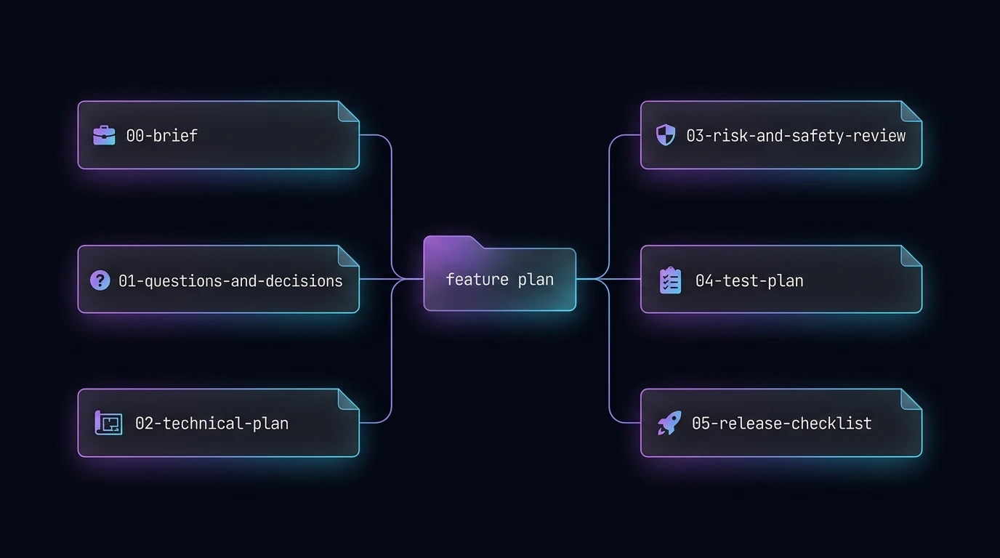
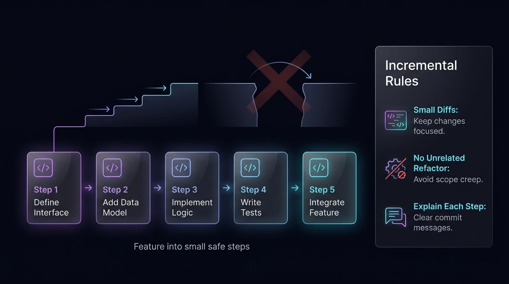
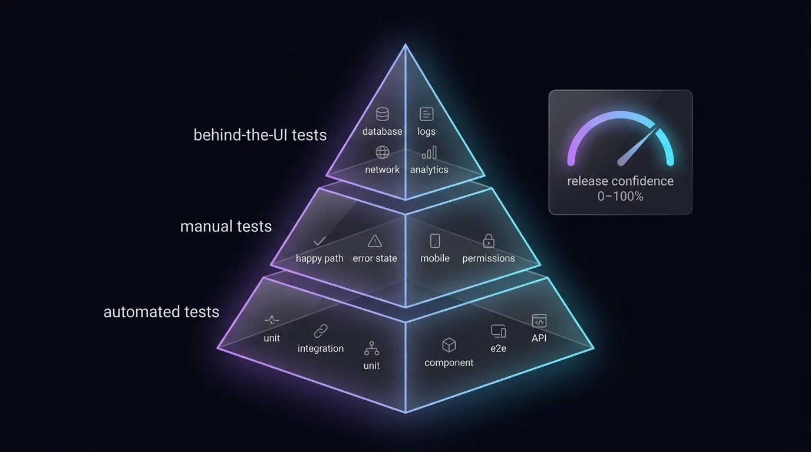
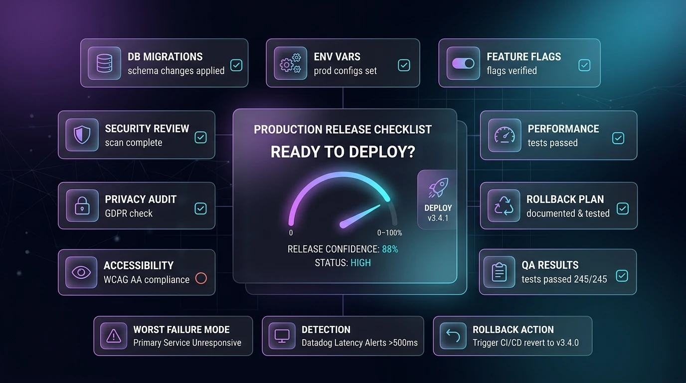
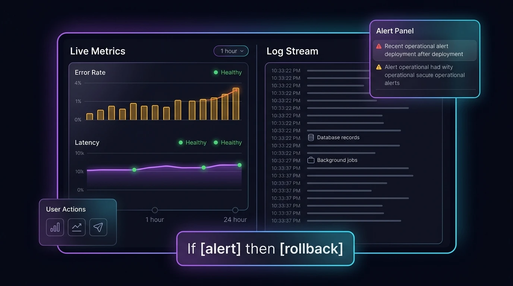

Phase 1 — Project / Feature Brief
Use this prompt first.
Prompt
I want to build the following product / feature:
Before writing any code, review the existing codebase and create a production-ready planning document.
Create the following markdown files in a date sub-folder for this feature cycle (`docs//feature-plan/`):
1. `docs//feature-plan/00-brief.md`
2. `docs//feature-plan/01-questions-and-decisions.md`
3. `docs//feature-plan/02-technical-plan.md`
4. `docs//feature-plan/03-risk-and-safety-review.md`
5. `docs//feature-plan/04-test-plan.md`
6. `docs//feature-plan/05-release-checklist.md`
The plan should include:
- The user problem being solved.
- The expected user flow.
- The main technical approach.
- Existing files, components, routes, database tables, APIs, or services that are relevant.
- New files likely to be created.
- Existing files likely to be changed.
- Data model changes, if any.
- API changes, if any.
- Authentication and authorization considerations.
- Security and privacy risks.
- Performance risks.
- Edge cases.
- Accessibility considerations.
- Manual tests.
- Automated tests.
- Rollback plan.
- Definition of done.
Important rules:
- Do not write implementation code yet.
- Do not make assumptions silently.
- If there are open questions, put them in `docs//feature-plan/01-questions-and-decisions.md`.
- For each question, explain why it matters and what could go wrong if we choose badly.
- Leave an input box under each question for me to type the answer.
- For multiple-choice questions, include check boxes with a custom input box under it as well.
- Where possible, recommend a sensible default decision.
- Mark decisions as one of:
- `Needs user answer`
- `Recommended default`
- `Safe to decide now`
- Use the following strict formatting for questions and answers:
### Question 1: [Short Title]
- **Status**: `Needs user answer`
- **Why it matters**: [Why it matters / what could go wrong]
- **Recommended Default**: [Default choice if applicable]
- **Your Answer**: <input type="text" placeholder="Type your answer here" style="width: 100%;">
### Question 2: [Short Title (Multiple Choice)]
- **Status**: `Recommended default`
- **Why it matters**: [Why it matters / what could go wrong]
- **Options**:
- [ ] Option A
- [ ] Option B
- [ ] Custom/Other: <input type="text" placeholder="Type custom answer here">
- After creating the documents, stop and wait for me to answer the questions.

Phase 2 — Answer Questions
After reviewing
docs//feature-plan/01-questions-and-decisions.md,
answer directly
inside the markdown file.
Then use this prompt:
Prompt
I have answered the questions in `docs//feature-plan/01-questions-and-decisions.md`. Please re-read: - `docs//feature-plan/00-brief.md` - `docs//feature-plan/01-questions-and-decisions.md` - `docs//feature-plan/02-technical-plan.md` - `docs//feature-plan/03-risk-and-safety-review.md` - `docs//feature-plan/04-test-plan.md` - `docs//feature-plan/05-release-checklist.md` Then update the technical plan, risk review, test plan, and release checklist based on my answers. Before coding, summarize: 1. The final agreed scope. 2. Any decisions I made. 3. Any assumptions still remaining. 4. The first small implementation step you recommend. 5. The exact files you expect to edit first. Do not start coding until I approve the implementation step.
Phase 3 — Junior Developer Explanation
Use this whenever you do not understand part of the plan.
Prompt
I do not understand this part:
Please explain it as if I am a junior developer.
Use:
- A simple explanation.
- An analogy or metaphor.
- A small concrete example.
- Why this matters in production.
- What could go wrong if we misunderstand it.
- How this applies to our current codebase.
Phase 4 — Implementation in Small Steps
Use this when you are ready to let the AI code.
Prompt
Start implementing the feature, but work in small, safe steps.
Rules:
- Only implement the first approved step.
- Before editing files, restate what you are about to change.
- Keep changes small and reviewable.
- Do not refactor unrelated code.
- Do not change public APIs unless the plan says to.
- Do not change database schema without explaining the migration and rollback.
- Do not introduce new packages unless you explain why they are needed.
- Do not store secrets in code.
- Do not weaken authentication, authorization, validation, or error handling.
- Prefer clear, maintainable code over clever code.
- After each step, explain:
1. What changed.
2. Why it changed.
3. Which files changed.
4. What tests should now be run.
5. What remains to be done.
Implement only this step:

Phase 5 — Self-Review Before Testing
Run this after each implementation step.
Prompt
Review your own changes before we run tests. Check for: - TypeScript errors. - Lint issues. - Incorrect assumptions. - Security issues. - Missing validation. - Missing authorization checks. - Race conditions. - Poor error handling. - Broken loading states. - Broken empty states. - Broken mobile layout. - Accessibility issues. - Performance problems. - Unnecessary complexity. - Tests that should be added. Be critical. Look for bugs as if you are reviewing someone else's pull request. Return: 1. Potential issues found. 2. Fixes you recommend now. 3. Fixes that can wait. 4. Whether this is safe to test.
Phase 6 — Testing
Use this prompt before accepting the feature.
Prompt
Create a complete test checklist for this feature. Include: ## Automated tests - Unit tests. - Integration tests. - Component tests. - End-to-end tests. - API tests. - Database/migration tests, if relevant. - Permission/authentication tests. - Regression tests for existing behaviour. For each test, say: - What it proves. - What file it should live in. - What command should run it. - Whether it is essential before release. ## Manual tests Include tests for: - Happy path. - Empty state. - Error state. - Slow network. - Invalid input. - Permission denied. - Mobile layout. - Refreshing the page. - Going back/forward in the browser. - Multiple users or sessions, if relevant. - Data persistence. - Accessibility using keyboard only. - Production-like environment. ## Behind-the-UI tests List ways to verify the feature is working beyond just clicking the UI, such as: - Inspecting database rows. - Checking API responses. - Checking server logs. - Checking browser console logs. - Checking network requests. - Checking analytics events. - Checking background jobs. - Checking emails/webhooks, if relevant. - Checking error monitoring. End with a clear release confidence rating from 0–100%.

Phase 7 — Production Release Checklist
Use this before deploying.
Prompt
Prepare a production release checklist. Include: - Final scope summary. - Files changed. - Database migrations. - Environment variables. - Feature flags. - Security review. - Privacy review. - Performance review. - Accessibility review. - Error handling review. - Logging/monitoring review. - Rollback plan. - Manual QA checklist. - Automated test results. - Known limitations. - Post-release checks. Also answer: 1. What is the worst realistic failure mode? 2. How would we detect it quickly? 3. How would we roll back safely? 4. Is this safe to release now? Give a release confidence score from 0–100%. Do not say it is production ready unless the evidence supports it.

Phase 8 — Post-Release Monitoring
Use this after deployment.
Prompt
Create a post-release monitoring checklist for this feature.
Include:
- What user actions to test in production.
- What logs to check.
- What metrics to watch.
- What errors would indicate a serious problem.
- What database records should exist.
- What analytics events should fire.
- How to confirm no existing behaviour was broken.
- What to check after 1 hour.
- What to check after 24 hours.
Also create a simple rollback decision rule:
If , then we should .
